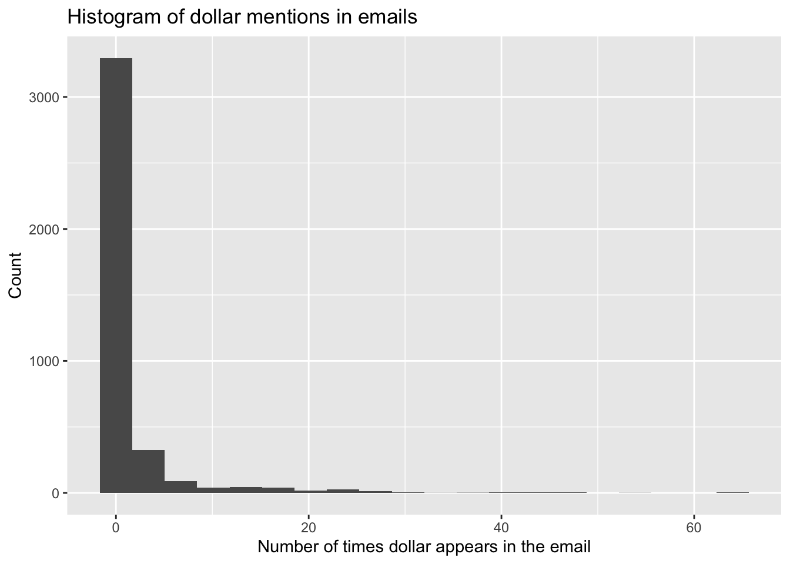

Rows: 3,921
Columns: 21
$ spam <fct> 0, 0, 0, 0, 0, 0, 0, 0, 0, 0, 0, 0, 0, 0, 0, 0, 0, 0, 0, …
$ to_multiple <fct> 0, 0, 0, 0, 0, 0, 1, 1, 0, 0, 0, 0, 0, 0, 0, 0, 0, 0, 0, …
$ from <fct> 1, 1, 1, 1, 1, 1, 1, 1, 1, 1, 1, 1, 1, 1, 1, 1, 1, 1, 1, …
$ cc <int> 0, 0, 0, 0, 0, 0, 0, 1, 0, 0, 0, 1, 0, 1, 2, 1, 0, 2, 0, …
$ sent_email <fct> 0, 0, 0, 0, 0, 0, 1, 1, 0, 0, 1, 0, 0, 1, 0, 1, 0, 0, 1, …
$ time <dttm> 2012-01-01 01:16:41, 2012-01-01 02:03:59, 2012-01-01 11:…
$ image <dbl> 0, 0, 0, 0, 0, 0, 0, 1, 0, 0, 0, 0, 0, 0, 0, 0, 0, 0, 0, …
$ attach <dbl> 0, 0, 0, 0, 0, 0, 0, 1, 0, 0, 0, 0, 0, 0, 0, 0, 0, 0, 0, …
$ dollar <dbl> 0, 0, 4, 0, 0, 0, 0, 0, 0, 0, 0, 0, 0, 0, 2, 0, 5, 0, 0, …
$ winner <fct> no, no, no, no, no, no, no, no, no, no, no, no, no, no, n…
$ inherit <dbl> 0, 0, 1, 0, 0, 0, 0, 0, 0, 0, 0, 0, 0, 0, 0, 0, 0, 0, 0, …
$ viagra <dbl> 0, 0, 0, 0, 0, 0, 0, 0, 0, 0, 0, 0, 0, 0, 0, 0, 0, 0, 0, …
$ password <dbl> 0, 0, 0, 0, 2, 2, 0, 0, 0, 0, 0, 0, 0, 0, 0, 0, 1, 0, 0, …
$ num_char <dbl> 11.370, 10.504, 7.773, 13.256, 1.231, 1.091, 4.837, 7.421…
$ line_breaks <int> 202, 202, 192, 255, 29, 25, 193, 237, 69, 68, 25, 79, 191…
$ format <fct> 1, 1, 1, 1, 0, 0, 1, 1, 0, 1, 1, 0, 1, 1, 1, 1, 1, 1, 0, …
$ re_subj <fct> 0, 0, 0, 0, 0, 0, 0, 0, 0, 0, 0, 1, 0, 1, 1, 1, 0, 1, 1, …
$ exclaim_subj <dbl> 0, 0, 0, 0, 0, 0, 0, 0, 0, 0, 0, 0, 0, 0, 0, 0, 1, 0, 0, …
$ urgent_subj <fct> 0, 0, 0, 0, 0, 0, 0, 0, 0, 0, 0, 0, 0, 0, 0, 0, 0, 0, 0, …
$ exclaim_mess <dbl> 0, 1, 6, 48, 1, 1, 1, 18, 1, 0, 2, 1, 0, 10, 4, 10, 20, 0…
$ number <fct> big, small, small, small, none, none, big, small, small, …Midterm 2 Practice Answers
- (c) For every additional $1,000 of annual salary, the model predicts the raise to be higher, on average, by 0.0155%.
- (d) \(R^2\) of
raise_2_fitis higher than \(R^2\) ofraise_1_fitsinceraise_2_fithas one more predictor and \(R^2\) always - The reference level of
performance_ratingis High, since it’s the first level alphabetically. Therefore, the coefficient -2.40% is the predicted difference in raise comparing High to Successful. In this context a negative coefficient makes sense since we would expect those with High performance rating to get higher raises than those with Successful performance. - (a) “Poor”, “Successful”, “High”, “Top”.
- Option 3. It’s a linear model with no interaction effect, so parallel lines. And since the slope for
salary_typeSalariedis positive, its intercept is higher. The equations of the lines are as follows:-
Hourly:
\[ \begin{align*} \widehat{percent\_incr} &= 1.24 + 0.0000137 \times annual\_salary + 0.913 salary\_typeSalaried \\ &= 1.24 + 0.0000137 \times annual\_salary + 0.913 \times 0 \\ &= 1.24 + 0.0000137 \times annual\_salary \end{align*} \]
-
Salaried:
\[ \begin{align*} \widehat{percent\_incr} &= 1.24 + 0.0000137 \times annual\_salary + 0.913 salary\_typeSalaried \\ &= 1.24 + 0.0000137 \times annual\_salary + 0.913 \times 1 \\ &= 2.153 + 0.0000137 \times annual\_salary \end{align*} \]
-
- (c) The model predicts that the percentage increase employees with Successful performance get, on average, is higher by a factor of 1025 compared to the employees with Poor performance rating.
- (d)
as.numeric(str_remove(runtime, " mins")) - (e) Blue City \(>\) Rang De Basanti \(>\) Winter Sleep
- (b) 31% of the variability in movie scores is explained by their runtime.
- (a) summarize
- (b) A value between 0 and 0.434.
- (e) G-rated movies that are 0 minutes in length are predicted to score, on average, 4.525 points.
- (c) All else held constant, for each additional minute of runtime, movie scores will be higher by 0.021 points on average.
- (c) is greater than
- (a) \(\widehat{score} = (4.525 - 0.257) + 0.021 \times runtime\)
- (a) and (d).
- (c) We are 95% confident that the mean number of texts per month of all American teens is between 1450 and 1550.
- A parsimonious model is the simplest model with the best predictive performance.
- a.
Spam is a factor; it is an indicator for if an email was spam or not.
# A tibble: 2 × 3
spam n percent
<fct> <int> <dbl>
1 0 3554 90.6
2 1 367 9.36About 9.36 percent of the emails are labeled spam.
b.
Dollar is a double.

# A tibble: 1 × 4
dollar_median dollar_iqr dollar_q25 dollar_q75
<dbl> <dbl> <dbl> <dbl>
1 0 0 0 0The distribution of dollar is unimodal and right-skewed with a median of 0. In fact, the majority of the emails have 0 dollar signs in them.
c.
# A tibble: 2 × 5
term estimate std.error statistic p.value
<chr> <dbl> <dbl> <dbl> <dbl>
1 (Intercept) -2.21 0.0569 -38.9 0
2 dollar -0.0564 0.0195 -2.89 0.00380d.
The probability the email is spam in this case is 7.6%. Since it is less than 50% the email is classified as not spam.
# A tibble: 1 × 2
.pred_0 .pred_1
<dbl> <dbl>
1 0.924 0.0763- a.
# A tibble: 4 × 5
term estimate std.error statistic p.value
<chr> <dbl> <dbl> <dbl> <dbl>
1 (Intercept) -2.26 0.0581 -38.9 0
2 dollar -0.0663 0.0195 -3.40 6.86e- 4
3 winneryes 1.78 0.287 6.21 5.21e-10
4 urgent_subj1 2.61 0.767 3.40 6.75e- 4b.
# A tibble: 3,921 × 24
.pred_class .pred_0 .pred_1 spam to_multiple from cc sent_email
<fct> <dbl> <dbl> <fct> <fct> <fct> <int> <fct>
1 0 0.906 0.0944 0 0 1 0 0
2 0 0.906 0.0944 0 0 1 0 0
3 0 0.926 0.0740 0 0 1 0 0
4 0 0.906 0.0944 0 0 1 0 0
5 0 0.906 0.0944 0 0 1 0 0
6 0 0.906 0.0944 0 0 1 0 0
7 0 0.906 0.0944 0 1 1 0 1
8 0 0.906 0.0944 0 1 1 1 1
9 0 0.906 0.0944 0 0 1 0 0
10 0 0.906 0.0944 0 0 1 0 0
# ℹ 3,911 more rows
# ℹ 16 more variables: time <dttm>, image <dbl>, attach <dbl>, dollar <dbl>,
# winner <fct>, inherit <dbl>, viagra <dbl>, password <dbl>, num_char <dbl>,
# line_breaks <int>, format <fct>, re_subj <fct>, exclaim_subj <dbl>,
# urgent_subj <fct>, exclaim_mess <dbl>, number <fct>c.
# A tibble: 4 × 3
spam .pred_class n
<fct> <fct> <int>
1 0 0 3551
2 0 1 3
3 1 0 363
4 1 1 4There are 4 emails that are spam and are correctly identified. There are 363 emails that are spam that are labelled as not spam. There are 3 emails that are not spam that are labelled as spam. There are 3551 emails that are not spam and are correctly identified.
d.
The false positive rate is 0.0844% and false negative rate is 98.9%.
# A tibble: 4 × 4
# Groups: spam [2]
spam .pred_class n p
<fct> <fct> <int> <dbl>
1 0 0 3551 0.999
2 0 1 3 0.000844
3 1 0 363 0.989
4 1 1 4 0.0109 - a.
Number of characters could be reasonable predictor of spam. Also, this plot supports differences in distributions. (I also included the predictors from Question 2 – winner and urgent_subj in addition to dollar)
# A tibble: 5 × 5
term estimate std.error statistic p.value
<chr> <dbl> <dbl> <dbl> <dbl>
1 (Intercept) -1.84 0.0724 -25.5 4.23e-143
2 dollar -0.0206 0.0203 -1.02 3.10e- 1
3 winneryes 2.01 0.303 6.62 3.62e- 11
4 urgent_subj1 2.31 0.772 3.00 2.74e- 3
5 num_char -0.0619 0.00835 -7.41 1.26e- 13b.
c.
# A tibble: 4 × 3
spam .pred_class n
<fct> <fct> <int>
1 0 0 3547
2 0 1 7
3 1 0 353
4 1 1 14d.
The false negative rate decreased to 96.2%. The false positive rate is a tiny bit higher at 0.2%.
# A tibble: 4 × 4
# Groups: spam [2]
spam .pred_class n p
<fct> <fct> <int> <dbl>
1 0 0 3547 0.998
2 0 1 7 0.00197
3 1 0 353 0.962
4 1 1 14 0.0381 e. The model from Question 3 is preferable over the model in Question 2. While the false positive rate increased, the false negative rate decreased by a larger amount; and overall more emails are categorized correctly (3547+14 = 3561 emails vs 3551 + 4 = 3555) for the model used in Question 3.